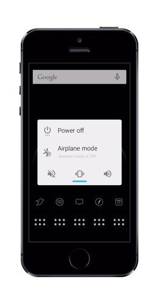

Andrios
Andrios brings an Android experience to iOS. It includes many UI addons for iOS that include an action bar, a power menu, Google search widget, volume slider, miniplayer, the Android lock animation, and much more. All of the intricate parts of this tweak are identical to their counterpart on Android, and we made sure to fill them with awesome features. Andrios brings the best of Android to iOS, so you can enjoy both.